Render asli engine/GLB. Screenshot layout/model memakai fixture peserta yang dijelaskan dalam laporan; screenshot peringkat siswa dan cup diambil melalui alur game sebenarnya dengan fixture gerbang/finish. Tidak memakai gambar generatif. Game · Laporan
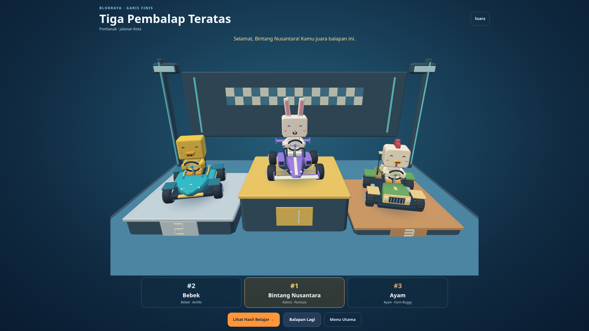
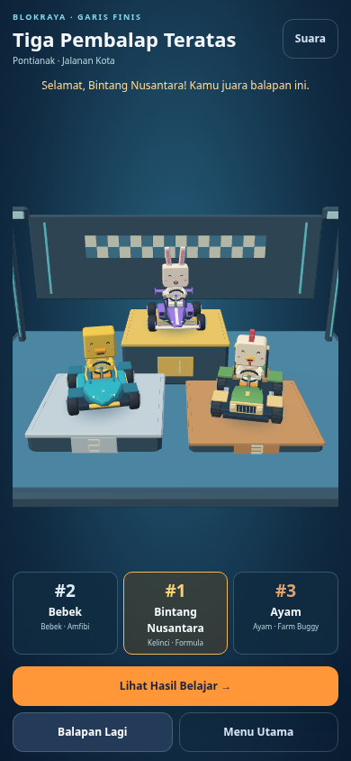
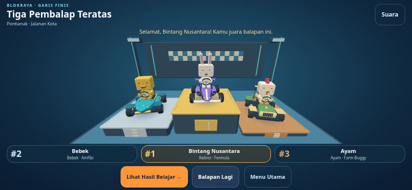
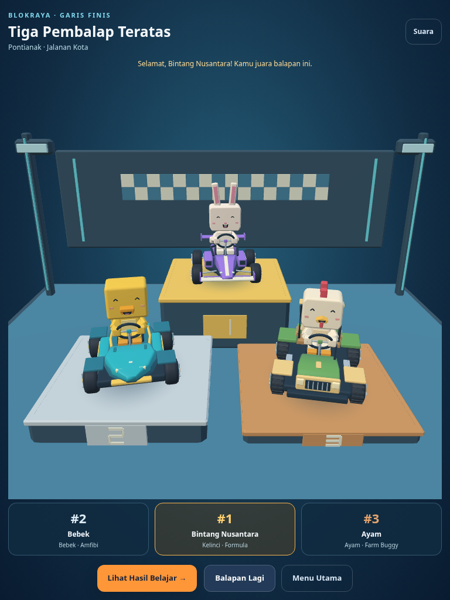
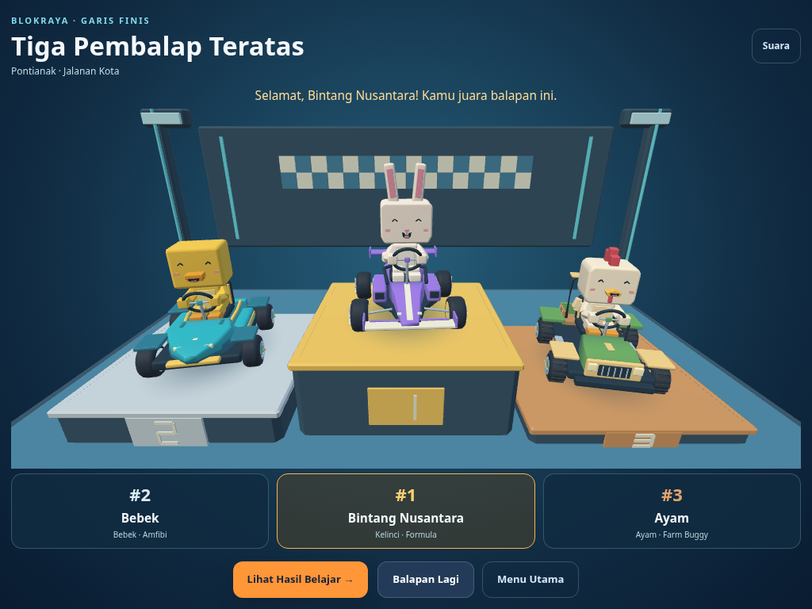
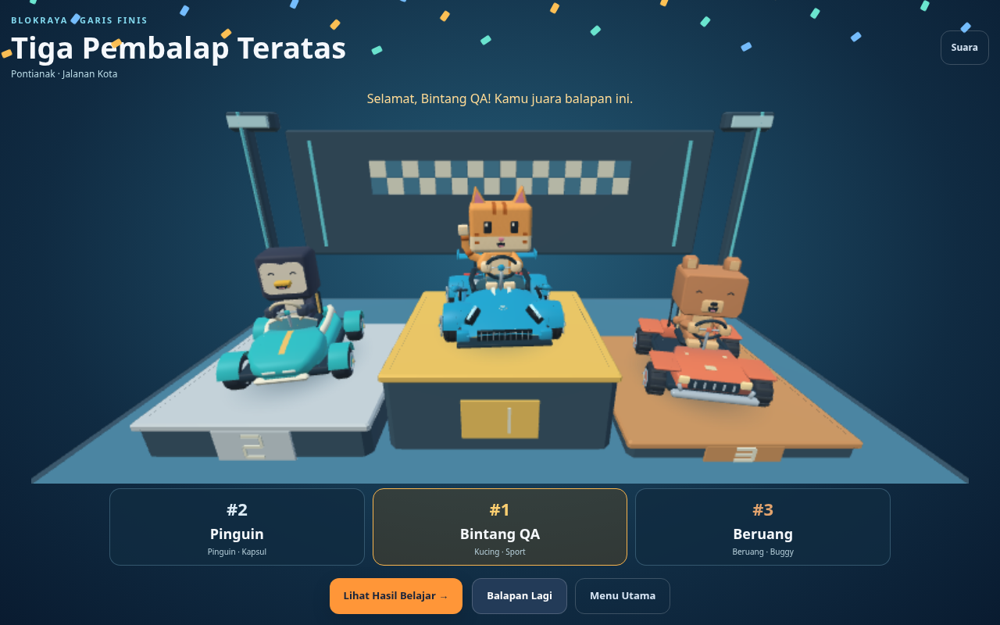
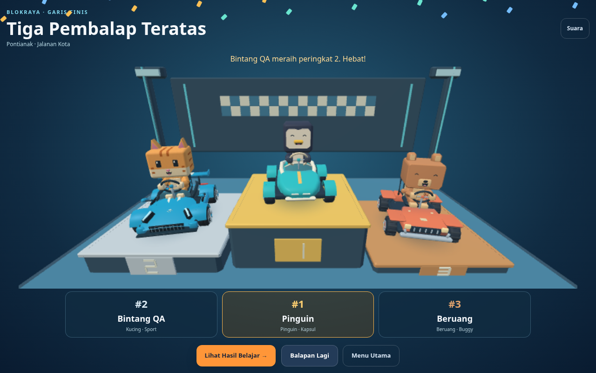
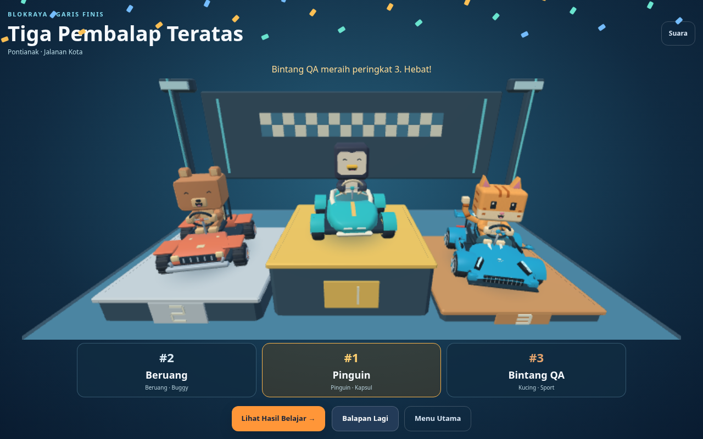
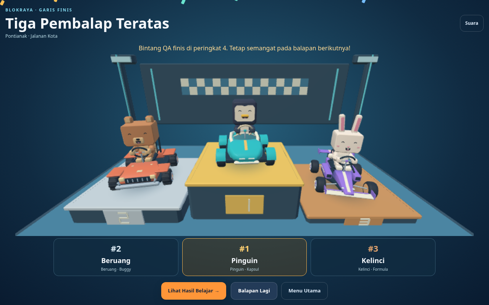
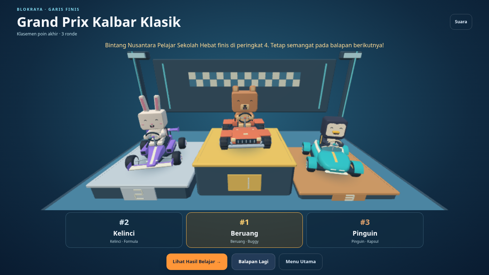
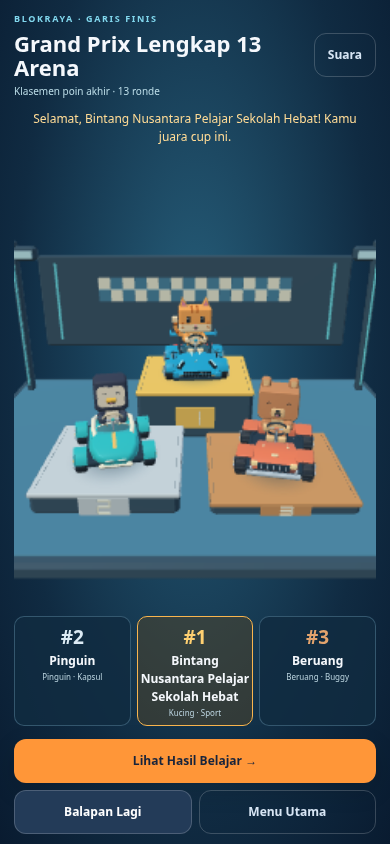
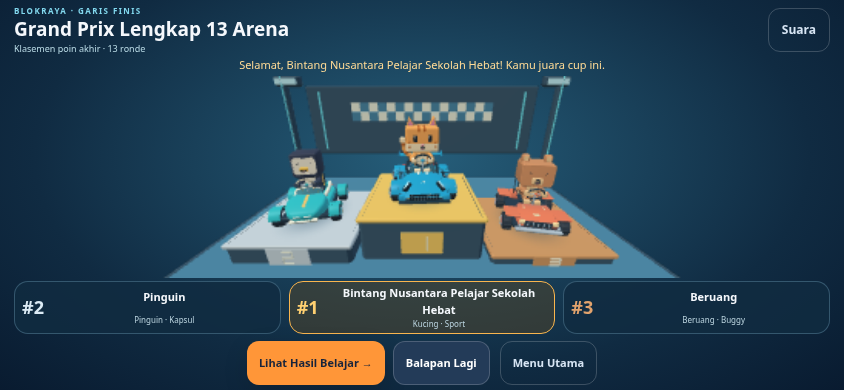
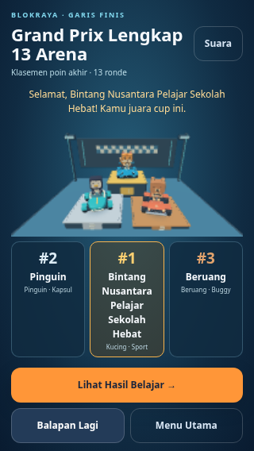
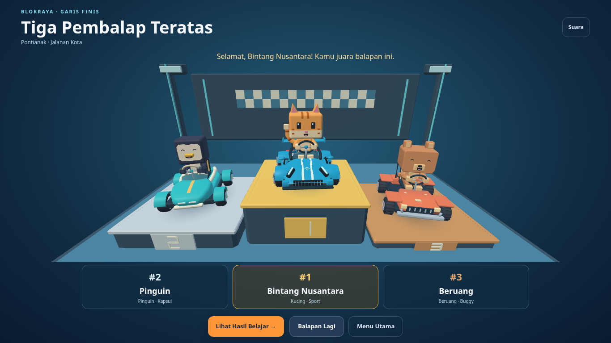
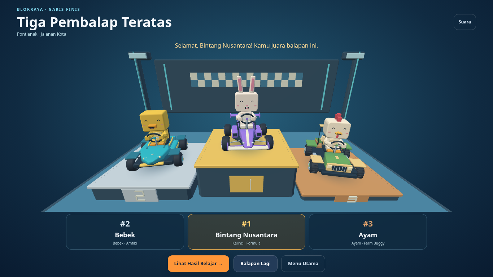
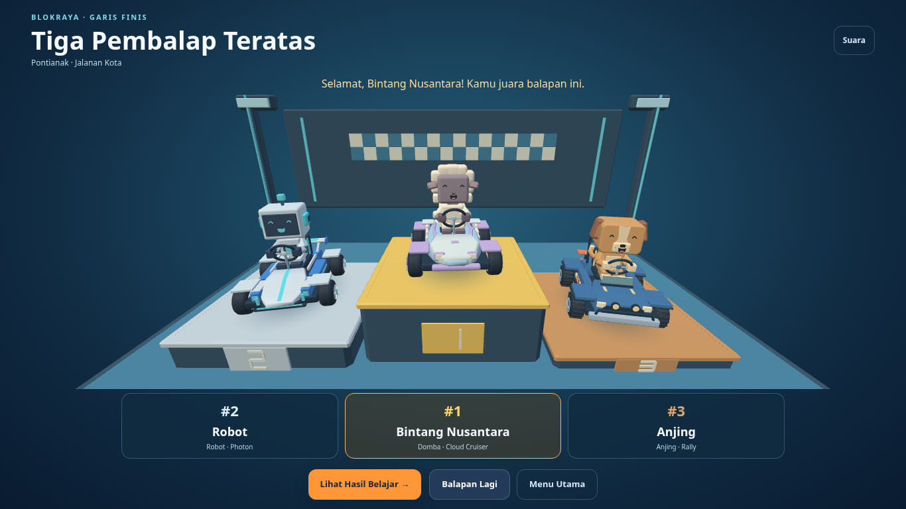
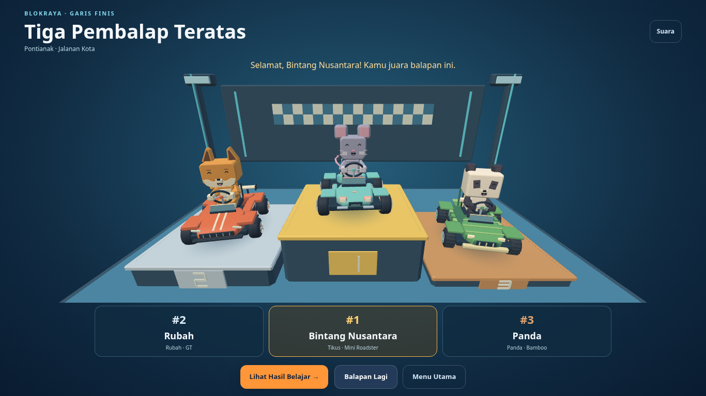
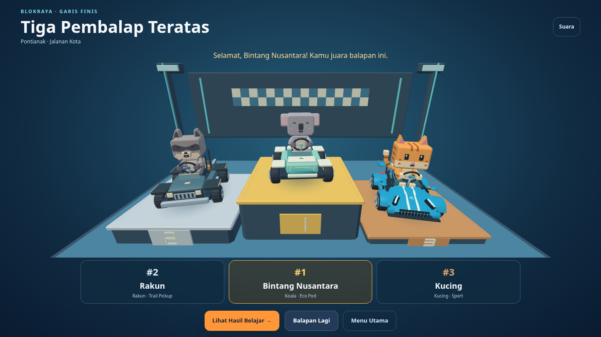
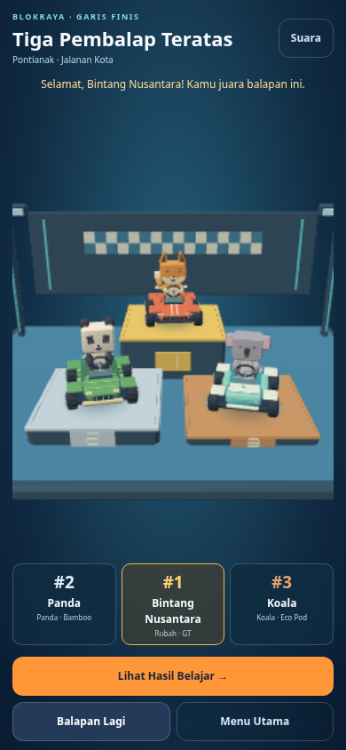